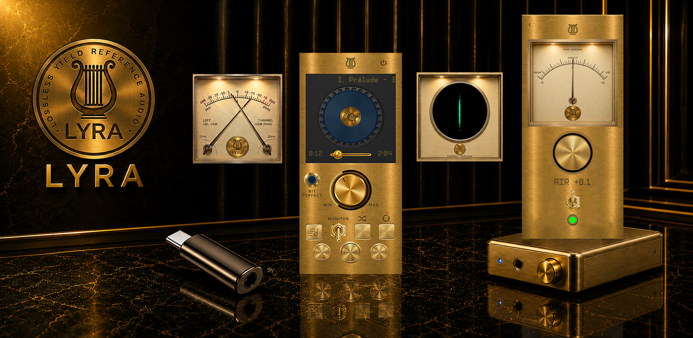
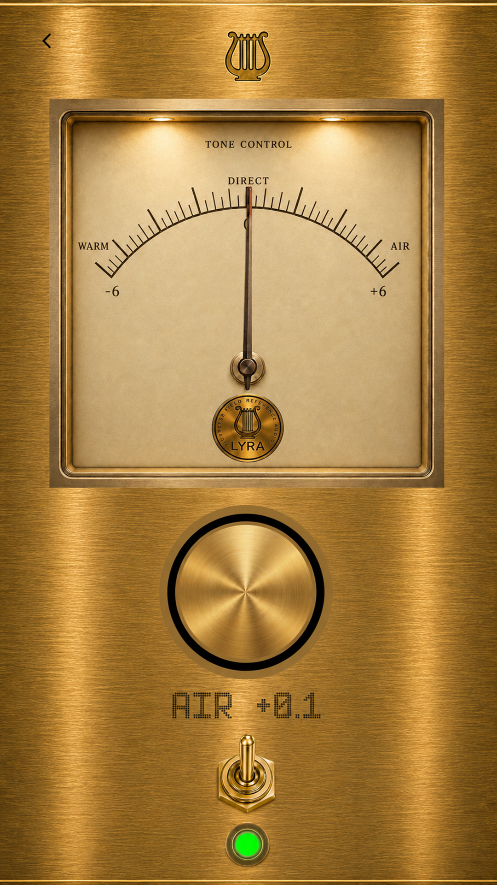
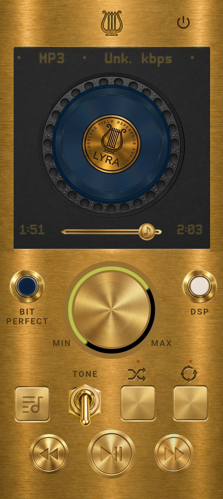
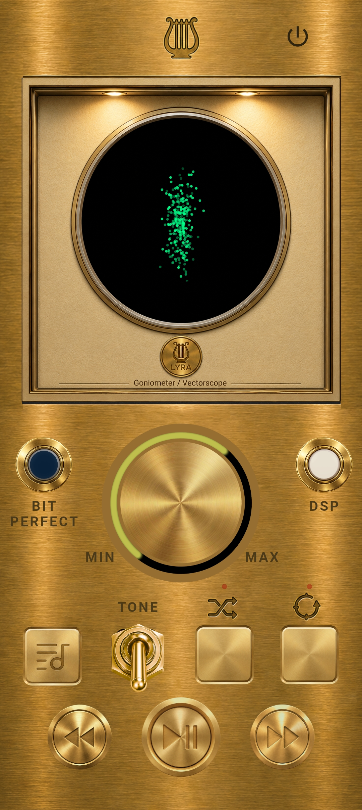
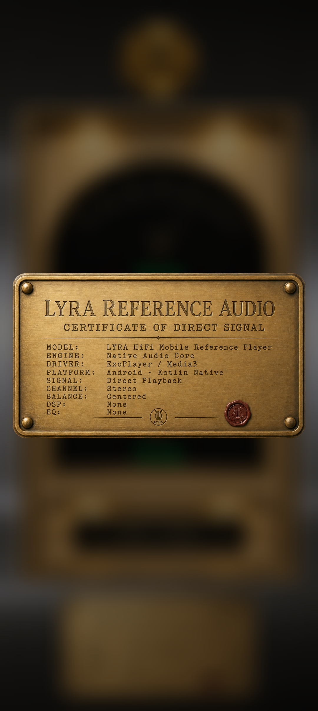
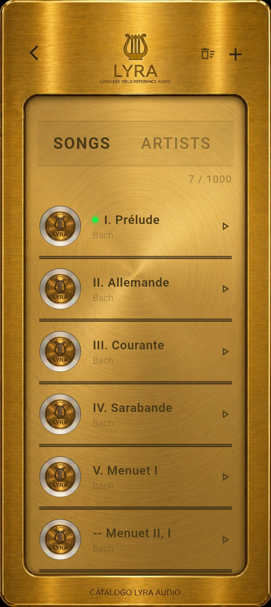

01
Reference playback
A playback environment designed around the original recording rather than artificial coloration.
Reference Playback Instrument
Listen without alteration.

A reference music player built around fidelity, restraint and respect for the original recording.
Enter the instrumentPurpose
Music playback should not compete with the music.
Lyra BitPerfect is designed to preserve the signal, expose the real playback path and leave interpretation to the listener.
It does not attempt to improve the recording through artificial enhancement. It does not disguise processing as fidelity.
The purpose of the instrument is not to impose a sound. It is to let the recording remain itself.
The Instrument
Lyra BitPerfect treats the phone as a real audio machine, not as an empty surface for generic controls.
01
A playback environment designed around the original recording rather than artificial coloration.
02
Playback information is presented as part of the instrument, including the active output path and connected digital audio hardware.
03
Visual instruments reveal level, channel relationship and playback behaviour without becoming decorative animation.
04
Controls are designed as parts of a coherent audio instrument: direct, legible and deliberate.
Interface
Every surface communicates function. Every visual element belongs to the act of listening.








Film
Documentation
User guides and technical reports are provided directly, without registration or restricted access.
User Guides
Technical Reports
Privacy
Read or download the current policy document.
Lyra BitPerfect
Fidelity is not an effect.
It is the absence of unnecessary intervention.